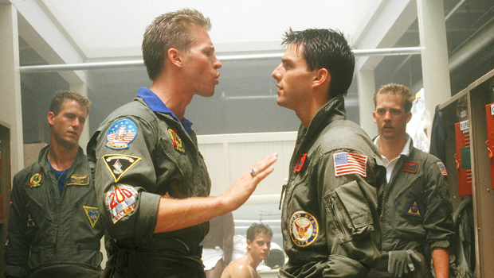

De 1965 a 1968, os EUA montaram a Operação Rolling Thunder, parte de sua guerra com a República Democrática Comunista do Vietnã (Vietnã do Norte). Os EUA estavam apoiando a República do Vietnã (Vietnã do Sul) em sua campanha para conter uma invasão norte-vietnamita, parte da Guerra Fria .
As táticas de lutador contra lutador ou combate aéreo não haviam sido ensinadas a novos pilotos. Em vez disso, novas gerações de mísseis ar-ar foram desenvolvidas, e a maioria das aeronaves da linha de frente não estava mais equipada com metralhadoras ou canhões. Os mísseis mostraram-se altamente eficazes quando lançados em condições de teste nos EUA, em voo reto e nivelado contra alvos igualmente estáveis.
Os preparativos para o estabelecimento da escola na Estação Aérea Naval (NAS) Miramar começaram em 1968, antes mesmo de Ault fazer seu relatório final. Tenente Comandante Dan Pedersen recebeu uma equipe pequena, mas muito pouco mais.
Após o fim da Guerra do Vietnã, o programa Top Gun continuou a prosperar. A escola ganhou fama e glamour com o lançamento do filme de 1986, estrelado por Tom Cruise. A década de 1990 trouxe mudanças com o fim da Guerra Fria, e uma nova era de incerteza se seguiu.
desenvolvido por iceguy ©